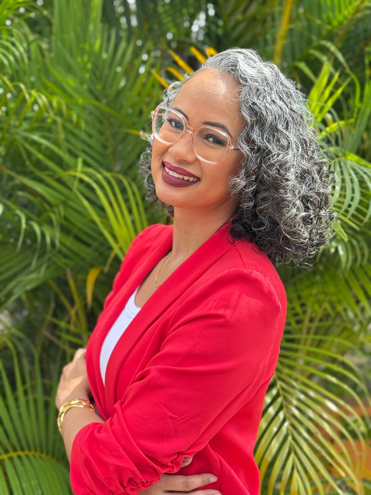

Business Informatics
University of Applied Sciences and Technology
About me
I am a devoted mother of two boys, a woman with a strong faith in God, a finance professional, a student, and an entrepreneur at heart.

Background
My name is Maresa Rodrigues. I have built my career in the financial sector through accuracy, responsibility, and continuous learning. At Assuria Verzekeringen N.V., I developed from a Cash Handling Officer into a Senior Officer Financial Processing.
My work combines financial processing, reconciliations, internal control, system support, process documentation and RPA automation projects.
In my free time, I also participate in freelance brand promotions and community engagements. Together with my husband, I am involved in Mansa Group N.V., where we focus on delivering excellent service in business areas such as import, car rental and insurance.
Education
University of Applied Sciences and Technology
Smart Academy Suriname
Anton de Kom University of Suriname
Experience
Assuria Verzekeringen N.V.
RPA projects, finance system support, bank and cash procedures, reconciliations, audits and internal control.
Assuria Verzekeringen N.V.
National and international payments, bank reconciliations, financial administration and monthly cash balancing.
Assuria Verzekeringen N.V.
Cash transactions, bulk payments, cash reconciliations, reporting and staff training.
Ramada Princes Casino
Cash transactions, customer service, daily cash balancing and financial transaction security.
Values
My faith in God gives me strength, direction and purpose.
As a devoted mother of two boys, family motivates me to keep growing.
I believe in continuous improvement, learning and practical solutions.